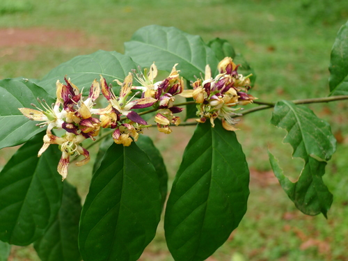

Pentadiplandraceae
Oubli Family (local name)
Pentadiplandraceae is a monotypic family of flowering plants in the order Brassicales, containing only one genus and one species: Pentadiplandra brazzeana. This species is a liana (scrambling climber) or shrub native to tropical West and Central Africa. It is particularly notable for producing an intensely sweet protein called brazzein in the pulp surrounding its seeds.
Overview
The Pentadiplandraceae family is unique in consisting of just a single species, Pentadiplandra brazzeana, found in the tropical forests of Africa (e.g., Gabon, Cameroon, Congo). Known locally as 'Oubli' (French for 'forgotten') in Gabon because children eat the sweet fruit but adults supposedly forget the taste, this plant has gained significant scientific interest.
The interest stems primarily from the discovery of brazzein, a protein isolated from the fruit's pulp that is estimated to be 500 to 2000 times sweeter than sucrose (table sugar) on a weight basis. This makes it one of the sweetest naturally occurring substances known and a potential low-calorie sweetener. The plant itself is a climbing liana or shrub with simple leaves and relatively small flowers borne on a distinct stalk (androgynophore).
Phylogenetically, Pentadiplandraceae belongs to the order Brassicales, the mustard order, which is characterized by the production of glucosinolates (mustard oil glycosides). Its position within the order suggests it is a relatively early diverging lineage.
Quick Facts
- Scientific Name: Pentadiplandraceae Hutch. & Dalziel
- Common Name: Oubli (local name)
- Number of Genera: 1 (Pentadiplandra)
- Number of Species: 1 (Pentadiplandra brazzeana Baill.)
- Distribution: Tropical West and Central Africa.
- Evolutionary Group: Eudicots - Rosids - Malvids - Brassicales
Key Characteristics
Growth Form and Habit
A perennial liana (scrambling climber) or shrub.
Leaves
Leaves are arranged alternately along the stem. They are simple, with entire margins, and often possess short petioles. Small, early-falling (caducous) stipules are present.
Inflorescence
Flowers are borne in axillary racemes or panicles.
Flowers
Flowers are generally small, actinomorphic (radially symmetrical), and usually unisexual (plants are polygamo-dioecious, having mostly unisexual flowers on separate plants but potentially some bisexual flowers). Flowers are 5-merous and possess a distinct stalk elevating the reproductive parts (androgynophore).
- Sepals: 5, free or slightly fused at the base.
- Petals: 5, free, typically white, greenish, or yellowish.
- Androecium (Male/Bisexual Flowers): Stamens 10-13, borne on the androgynophore below the ovary/pistillode. Typically arranged with 5 longer stamens alternating with 5-8 shorter ones. Filaments are distinct. Female flowers may have staminodes.
- Gynoecium (Female/Bisexual Flowers): Ovary is superior, positioned at the apex of the androgynophore. It is composed of 3-5 fused carpels forming a single locule (unilocular) with parietal placentation (ovules attached to the ovary wall). Ovules are numerous. The style is single and short, terminating in 3-5 distinct stigmas. Male flowers possess a rudimentary pistil (pistillode).
Fruits and Seeds
The fruit is a globose berry, typically reddish when ripe, containing numerous seeds embedded in pulp. The pulp (or possibly an aril associated with the seed) contains the intensely sweet protein brazzein. Seeds contain endosperm.
Chemical Characteristics
Contains glucosinolates (mustard oil glycosides), a characteristic feature of the order Brassicales. Most notably, the fruit pulp contains brazzein, a heat-stable, intensely sweet-tasting protein.
Field Identification
Identifying Pentadiplandra brazzeana requires finding it within its tropical African range and noting key features:
Primary Identification Features
- Geographic Location: Restricted to tropical West and Central Africa.
- Habit: Liana (climber) or shrub.
- Leaves: Alternate, simple, entire margins, stipules small/caducous.
- Flowers: Small, 5-merous, actinomorphic, often unisexual, borne on an androgynophore. Stamens 10-13. Ovary superior with parietal placentation.
- Fruit: Globose, reddish berry.
Secondary Identification Features
- Inflorescence Type: Axillary racemes or panicles.
- Habitat: Tropical forests.
- Taste (Caution!): While the fruit pulp is famously sweet, tasting unknown plants is not recommended.
- Glucosinolates: Crushed tissues might potentially have a faint mustard-like odor, typical of Brassicales (confirmation needed).
Seasonal Identification Tips
- Flowering/Fruiting Period: Check local botanical records for phenology in specific regions. Flowers and fruits are needed for definitive identification.
- Vegetative State: Identifying based on vegetative characters alone (alternate simple leaves on a liana/shrub in tropical Africa) would be difficult without flowers or fruit.
Common Confusion Points
- Other Lianas/Shrubs in Brassicales: Families like Capparaceae also occur in Africa and can have alternate simple leaves and 5-merous flowers. However, Capparaceae often have stipular spines, flowers with a gynophore (not androgynophore), different stamen numbers/arrangements, and typically capsular or different berry fruits. They also possess glucosinolates.
- Other Tropical Lianas/Shrubs: Many unrelated families have species with similar vegetative habits. Floral structure (androgynophore, 5 petals, 10-13 stamens, superior ovary with parietal placentation) and the berry fruit are key distinguishing features for Pentadiplandraceae.
Field Guide Quick Reference (Trop. W/C Africa)
Look For:
- Liana or shrub
- Leaves: Alternate, simple, entire
- Flowers: Small, 5-merous, often unisexual
- Androgynophore present
- Stamens: 10-13
- Ovary: Superior, 1-locular, parietal placentation
- Fruit: Reddish berry
Key Distinctions:
- Monotypic family (Pentadiplandra brazzeana)
- Presence of androgynophore
- Combination of floral parts (5 sep, 5 pet, 10-13 sta)
- Parietal placentation
- Berry fruit (containing brazzein)
- Glucosinolates present (Brassicales)
Notable Example (The Only Species)
The family contains only a single species:

Pentadiplandra brazzeana
Oubli
The sole member of the Pentadiplandraceae family. This liana or shrub from tropical Africa is the source of brazzein, an intensely sweet protein found in its red berry fruit. It possesses alternate simple leaves, small 5-merous flowers on an androgynophore, and belongs to the Brassicales order, indicated by the presence of glucosinolates.
Phylogeny and Classification
Pentadiplandraceae belongs to the order Brassicales, which is part of the malvid clade within the rosid eudicots. This order is characterized chemically by the near-universal production of glucosinolates (mustard oil glycosides).
Molecular phylogenetic studies place Pentadiplandraceae within the core Brassicales group but often as a relatively early diverging lineage, sometimes sister to a clade containing Tovariaceae or near the base of the clade that includes Capparaceae, Cleomaceae, and Brassicaceae. Its exact position relative to some other small families in the order (like Emblingiaceae, Setchellanthaceae) is still studied, but its membership within Brassicales is strongly supported. Its unique features, like the sweet protein brazzein and the androgynophore, make it an important lineage for understanding the evolution of traits within the order.
Position in Plant Phylogeny (APG IV)
- Kingdom: Plantae
- Clade: Angiosperms (Flowering plants)
- Clade: Eudicots
- Clade: Rosids
- Clade: Malvids
- Order: Brassicales
- Family: Pentadiplandraceae
Evolutionary Significance
Pentadiplandraceae, though monotypic, is evolutionarily significant:
- Basal Brassicales Lineage: Its position helps understand the early evolution and diversification of traits within the Brassicales order, including the evolution of floral structures and chemical compounds.
- Unique Sweet Protein: The evolution of brazzein, an intensely sweet protein, is a remarkable biochemical adaptation, distinct from typical carbohydrate-based sweeteners found in most fruits.
- Androgynophore: The presence of an androgynophore is a feature shared with some other Brassicales families (like Capparaceae), suggesting potential homologous structures or evolutionary trends within the order.
- Biogeography: Its restriction to tropical Africa contributes to understanding the historical biogeography of the Brassicales order.